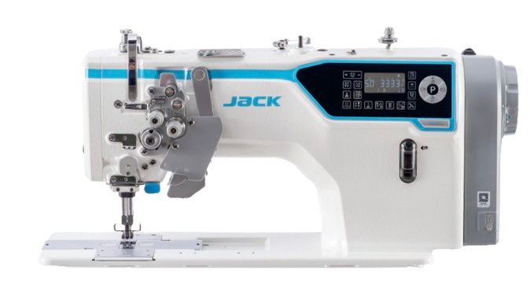
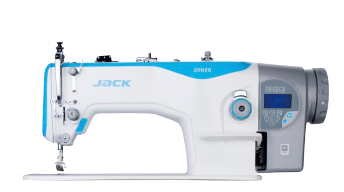
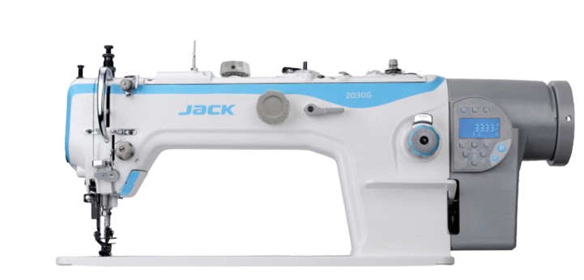
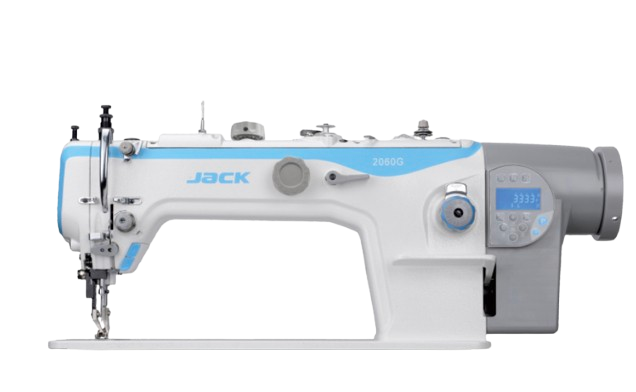
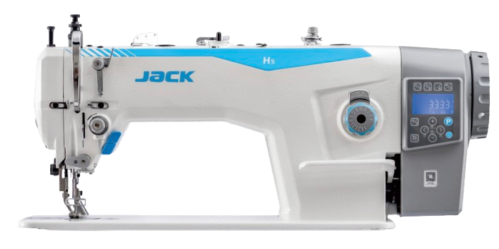
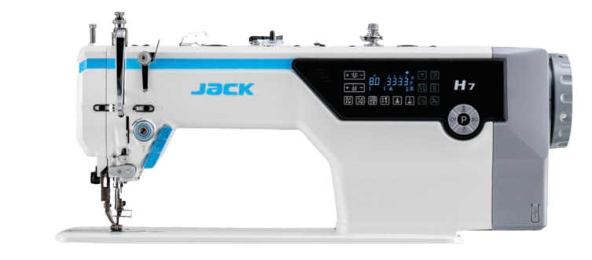

Two needles.
Perfect corners.
The 58450J series sews double-needle corners and right angles straight into denim, canvas and tent fabric in one pass, with straight-knife thread cutting that handles thin and thick thread alike and an auto corner-sewing cycle built into the head.
- Double-needle stitching for right angles and corners on denim and tents
- Straight-knife thread cutting adapts to thin 603 and thick 5000 thread
- Auto corner sewing for consistent bag, jacket and outdoor-gear corners
- Straight-stitch and corner-stitch variants across 11–22# needles

Five more ways to sew heavy.
From compound feeding to super high-speed and multi-fabric flexibility, each head below is built for leather, sofas, car seats and other heavy material.

Big stitch-length heavy-duty computerized lockstitch with a one-shaft transmission design, sewing tents, automotive supplies, non-woven bags and caps.
View spec sheet
Smooth bone-cross computerized top and bottom feeding machine with extensive operating room, built for sofas, car seats, luggage and canvas goods.
View spec sheet
Compound-feeding computerized lockstitch that lifts efficiency by 25%, built for sofa, car seat, luggage and canvas production.
View spec sheet
Super high-speed computerized top and bottom feeding machine with a simple panel, in dedicated builds for gloves, bags and light material.
View spec sheet
Flexible Alternation Technology spans a 1.3–5.5mm range with 10.5Nm integrated torque, wrinkle-free and bead-free across multiple fabric weights.
View spec sheet